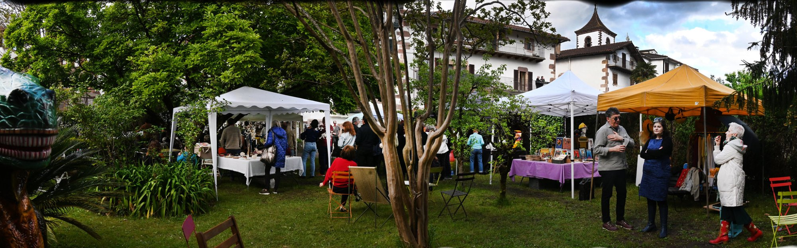
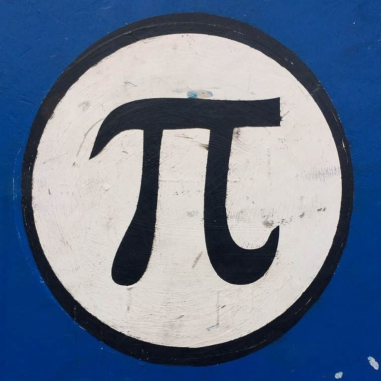

| BELTZA RECORDS · DONOSTIA _ DONEZTEBE | DESDE · TIK · DES · DE · SINCE · から · 1990 |
Una misión dedicada a explorar la cultura popular e investigar la antropología contemporánea.
El Blues nació en el delta del Mississippi. El Jazz en los burdeles de Nueva Orleans. El Punk en los garajes sin calefacción. Toda gran revolución cultural empieza donde nadie mira. Los discos son el objeto por excelencia: puedes adquirir una obra maestra por un precio popular.
Somos contenedores de la belleza que los humanos hemos creado con el poder que el Cosmos ha depositado en nosotros. Emmanuelle, Pérez Prado, la Electro Cumbia de Conciencia Resistente... no hay géneros menores, hay discos que todavía no has escuchado.
"Con Bowie nos acostaremos, con Japan despertaremos y con los Heartbreakers arderemos."Un acumulador. Empecé a los 5 años y nunca paré. Detrás de cada portada hay fotografía, diseño, música: todas las artes reunidas. Los discos me han enseñado todo lo que la universidad no pudo.
La Zenit 122K soviética, el "Peasants, Pigs & Astronauts" de Kula Shaker, el "Cézanne" de Bernard Dorival... El objeto fascinante no entiende de categorías.
El éxodo ha comenzado. Babilonia nos embruteció bajo falsas palmeras. Trasladamos décadas de esfuerzo desde el asfalto de San Sebastián a los robles de Malerreka. No por capricho — por convicción.
Xabatenea Etxea, una casa del siglo XVI. La Experiencia solo puede ocurrir aquí. Porque hay cosas que solo se revelan en silencio: el groove de un soul del 65 o el olor a Terras Mancas recién abierto.

— RASTRO DE JÚPITER EN EL JARDÍN —
La Última Frontera del Alma. Una misión dedicada a explorar la cultura popular e investigar la antropología contemporánea. Somos contenedores de la belleza. Are You Experienced.
Arimaren Azken Muga. Kultura herrikoia aztertu eta antropologia garaikidea ikertzeko eginkizun bat. Gizakiok sortutako edertasunaren ontziak gara. Are You Experienced.
The Last Frontier of the Soul. A mission dedicated to exploring popular culture and investigating contemporary anthropology. We are containers of beauty. Are You Experienced.
魂の最後のフロンティア。大衆文化を探求し、現代人類学を研究するためのミッション。私たちは、人間が創り出した美の容れ物である。Are You Experienced.
U xookol pixan. Jump'éel misión ti' u xokol cultura popular yéetel u kajtalil antropología contemporánea. Are You Experienced.
የነፍስ መጨረሻ ድንበር. ለሕዝባዊ ባህል ምርምርና ዘመናዊ አንትሮፖሎጂ ጥናት ያደረ ተልዕኮ። Are You Experienced.
